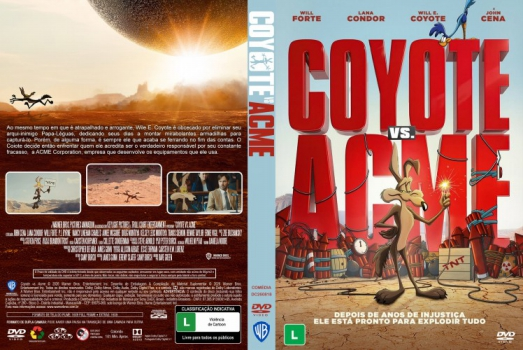

![link to Coyote vs. Acme [Autorado] on Rotten Tomatoes](../img/tomatoes.png)
![link to Coyote vs. Acme [Autorado] on TheMovieDb](../img/themoviedb.png)

País:United States, 103 minutos
Idiomas falados:Inglês, Português
Gênero(s):Comédia, Aventura, Família, Animação
Diretor(s):Dave Green
Escritor(es):Samy Burch
Codec:MPEG-2 (DVD)
Número: 5978


Certificado:10
Sinopse:
Após décadas de falhas catastróficas com os produtos ACME em sua caçada ao Papa-Léguas, Wile E. Coyote decide que é hora de buscar justiça e processar a corporação. Ao lado de um advogado azarado, Coyote trava uma batalha jurídica épica contra o impiedoso CEO da companhia. Enquanto enfrentam o sistema, a dupla desenvolve uma amizade improvável e luta para provar que a culpa de tantos desastres nunca foi do instinto, mas sim de defeitos de fabricação.
Elenco:
Tipo de mídia: DVD5,
Legendas: Português, Sem Legendas
Alugado: Não
Tela: Anamorphic Widescreen